去年年底，我媳妇神秘兮兮的跟我说，“知道吗？”，“什么？”， “日航有特价了”，“哦”，“咱们去吧”，“啊！又去啊！”，“这次咱们去关东，我想去箱根泡温泉，听说横滨也挺不错的，我还想去镰仓”，“额～”，“现在不去，以后都没机会了，一生完孩子，好几年都出不来了～～～～”
“我去！”
以上对话与现实不符，但出入不大。好吧，就是这样，我们决定在2017年的3月中那个旬去日本。为什么这时候去呢？是为了欣赏富士山的残雪？还是为了去抓住冬天的尾巴？都不是，是因为穷！是因为穷！是因为穷！樱花季的日本，我们消费不起呀！呜～呜～！
媳妇麻溜的把机票订好了，然后就催我做行程。我拖拖拉拉到年后，才有了一点想法。在出发前一个多月，我终于决定了大致的路线——东京成田机场入，然后直奔箱根，再到御殿场奥特莱斯购物，然后游富士五湖，之后逛东京，最后成田机场滚蛋回中国。总体行程如下图：
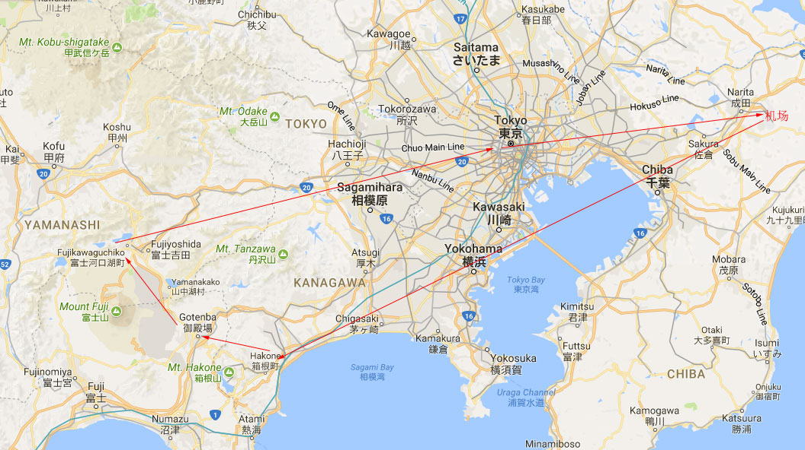
日本交通介绍
与中国不同的是，在一个地区会有很多家铁路公司同时为公众提供服务。例如在关东就有JR东日本、小田急电铁等公司。
同时公共汽车和地铁也是如此——在箱根地区就有箱根登山巴士和小田急箱根高速巴士；东京有两家地铁公司——东京Metro地铁和都营地铁两家。
在日本你可能会碰到一种情况——直通运转，就是说A公司的车可能会跑到B公司的铁道上，而B公司的车也可能会跑到A公司的铁道上。如果你有兴趣请参考小气少年的文章——直通運轉-關西篇。所以在电车到站时，一定要注意是谁家的电车。
小气少年的文章很不错，强烈要求第一次去日本的朋友读完小气少年的基本交通觀念下的所有文章。你可以先读一下，我们再继续。等你哟！
Day One
我们到成田机场已经快中午了，计划是当天赶到箱根的富士屋酒店（Fujiya Hotel /富士屋ホテル）入住。成田机场是在东京的西边，而箱根是在东京东边，所以这个是我们这次旅行做的最远也最为复杂的交通了。
计划：成田机场——（成田特快）——>>新宿站——（小田急浪漫特快）——>>箱根汤本站——（箱根登山电车）——>宫之下站——（步行）——>酒店
成田机场 Narita Airport
我们的飞机到达的是成田机场2号航站楼。楼层图如下，铁路站台是在地下二层
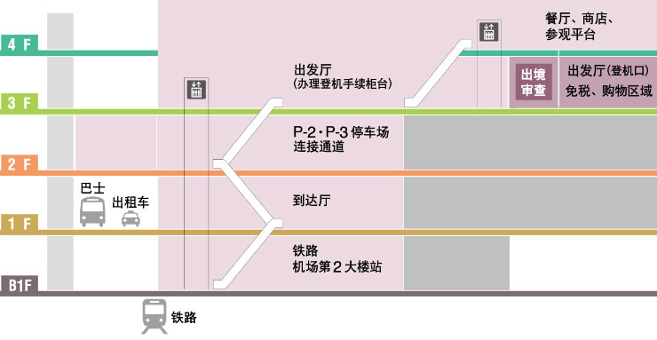
一出海关就是到达大厅（1F）。大厅的京成巴士售票柜台有售卖东京地铁24h，48h，72h券，在后面东京篇我会介绍，请先Mark下。下图中的10号和26号柜台就是京成巴士售票柜台。
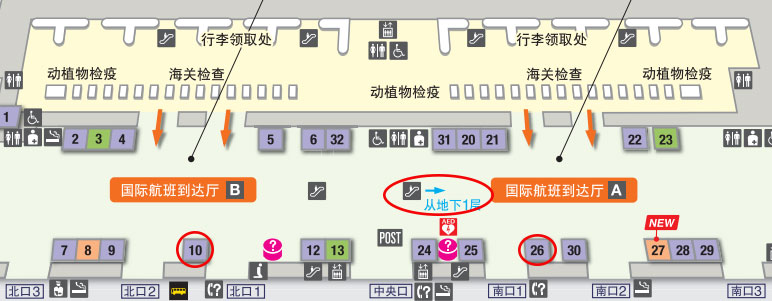
当天我们赶时间，加上觉得可能用不上，就没有买，后来有点后悔，呜呜～
我们沿着标识就往JR车站——机场第2大楼站——去了。车站在B1F，日本没有Ground Floor的概念。
成田特快 N’EX
成田的英文是Narita，读作那里他。日文的英文拼音r读l的音，所以ri就读作li。成田特快的英文就是Narita Express。我在以下的地名都会给出英文，以方便读者能够读出正确的发音。
在B1F，其实有两个地方可以买成田特快的票，如下图中的红色和绿色的两个地方。一个是JR东日本旅游服务中心（JR EAST Travel Service Center）——下图中红色的部分；一个是JR的绿色窗口（みどりの窓口）——下图中绿色的部分。JR的绿色窗口就是售票处，你会在日本很多地方看到带这个标志的窗口或营业所。
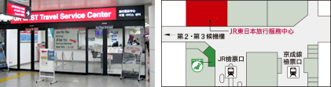
NOTE: JR检票口和京成线检票口是平行关系，注意不要搞错了
我们是在JR东日本旅行服务中心买的票，因为要买成田特快的往返票和Suica卡，加上这里的人一般会英语。
成田特快往返票是一去一回两张。下面是去程的票样：
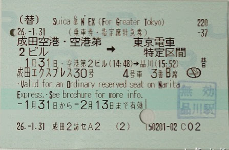
因为我当时没有想着要写攻略，所以就没有拍。上面的图片是借用小气少年的图片来解释一下。需要注意的是，这张票是乘车券和指定席特急券在一张票面上。有的文章说在绿色窗口或者其他地方是会买到乘车券一张和指定席特急券一张两张票。这是因为成田特快是全程指定席列车。乘车券是指你可以搭乘普通或快速列车从一个地方到另外一个地方。乘车券加上特急券是指你可以搭乘这段区间的特急列车。以上两种都是自由席，需要自己找位置坐，没位置就只好站着。而乘车券加上指定席券是指定你可以坐某趟列车的某个座位，类似于我们国内的车票。如果是两张票，在检票的时候，需要把两张上下叠在一起投进检票机，不要一张一张的投，切记切记！
下面是成田特快返程票：
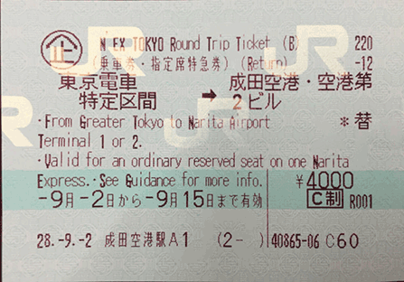
票上只是指定了日期和乘车区间，而没有座位号码。你需要在乘车前在绿色窗口或者机器上划位，我会在后面进行讲解。
NOTE: 需要注意的是并不是所有的车都到新宿站的。
关于如何搭乘以及其他事项，请参考小气少年的文章——從成田空港搭N’EX到東京市區(品川) ，这里建议先读一下。 下面我还会引用很多小气少年的文章，因为他已经写的很好了，我就偷懒一下下。成田特快车上有专门存放大件行李的地方，并且位置较多，很方便。
从成田机场到东京市内还有其他方式——Sky Liner，京成本线，JR线等等。我之所以选择成田特快是因为这个方案到达新宿最方便，并且我们在东京也是决定住在新宿附近。
从成田机场第2大楼站到新宿站的成田特快往返票价格是4000日元，需要1.5个小时。我们顺便还买了suica，也叫西瓜卡、企鹅卡。类似于香港的八达通，国内北京上海的交通卡。这是一种储值卡，流行于关东。可以用在大部分电车、巴士，并且还可以用来在便利店或自动售卖机上买东西，十分方便。关西的话一般用icoca。当然你也可以在关西用suica，在关东用icoca。但是这样用的话会略微划不来。例如一程本来是322日元，跨区用的话会收费成330日元。再说卡本身也可以退，即使不退，留作纪念也好。只有连续10年内不使用才会过期。suica要2000日元，其中1500日元的充值，500的卡的押金。具体请参考小气少年的文章——Suica的簡單介紹 ，我就偷懒不再赘述了
新宿站 Shinjuku Station
欢迎来到新宿站，这个全世界最复杂的交通枢纽！根据Wikipedia的说法，新宿站有超过200的出口，是个连日本人都会迷路的地方。再加上这里的人也是特别多，所以在这里换乘一定要留够时间。
一般说的新宿站指的是JR东日本新宿站。以JR东日本新宿站为中心，环绕了京王电铁、小田急电铁、东京地铁、都营地铁四家铁路公司的好几个车站。下面为各车站的相对位置图：
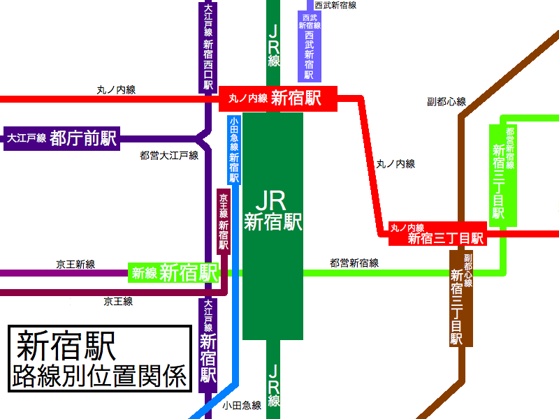
上图只是相对位置，并不是说JR新宿站下车后往东北方走就是小田急线新宿站，因为没有直接的通路。哭不哭, :(
JR新宿站有——地上出站口：南口，东南口，新南口，新宿南阳光广场口；地下出站口：西口，东口，中央西口，中央东口。这里所说的出口是检票口，可不是整栋大楼的出口。好几个车站其实是在一个大楼里的。再哭一下，:(
不怕不怕，有一个秘诀。当你在JR新宿站下车时，在站台上一定要记住“爬上楼是南口和东南口，下了楼是西口和东口”。也就是说在JR新宿站的站台上，爬上楼，就可以去二楼的出口，下楼通过地下通道，就是地下出站口了。
当天，我们下的站台是6号站台——吐槽一下，这个站台往南300米左右就是JR代代木站了。5号站台和6号站台是公用一个平台，一左一右的关系。
我们要去小田急旅游服务中心买票，需要到达西口。前往地下通道的扶梯在站台的最北端，所以下车后，我们一直往北走。途中路过去往南口的向上的楼梯，很多人从这里走，只有我们一直往前走，心里略微有些发虚，生怕走错了。路线图如下：
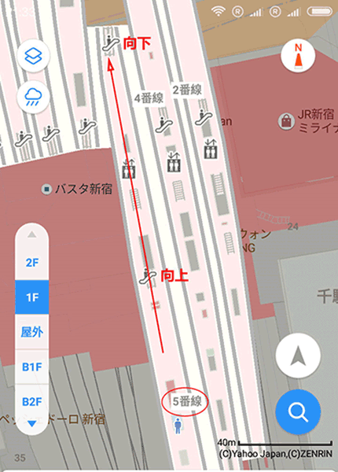
到地下后，我们沿着地下通道，一直走到东西自由通路（也叫北通路或青梅地下通路），左转，通过西口出站。接着通过楼梯到地上1层。过程如下图：
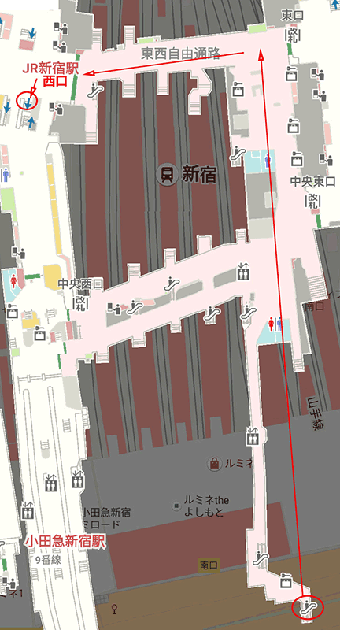
中间经过一条横着的路是中央通路，连接中央西口和中央东口。当然你也可以走中央通路，然后向北走，上楼梯，但是我不知道具体情况，就没有尝试。
上楼后的右手边就是新宿小田急旅游服务中心。可以参考下图：
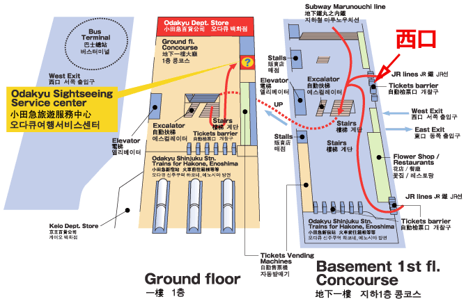
我们在这里购买了浪漫特快的车票，富士箱根周游券，还有从富士山返程的大巴车票。我将在下面详细讲述。
富士箱根周游券 Fuji Hakone Freepass
在箱根地区有两种周游券可以使用。
第一种是箱根周游券<<链接>>。可以在2日或3日内免费使用箱根地区的8种交通工具。此外在一些设施和景点购买门票时，出示周游券可以享受折扣，甚至免费，强烈推荐！！！票价见下图：
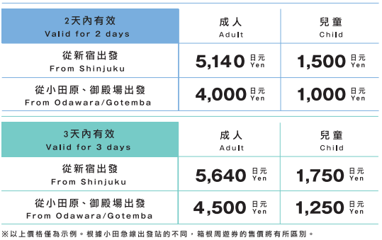
从新宿出发的周游券包含了新宿到箱根的小田急线的往返乘车券。如果需要搭乘小田急浪漫特快，需要额外购买特急券。
第二种是富士箱根周游券<<链接>>，只有3天券。可以在3天内免费使用富士山地区和箱根地区的大部分交通工具。在购买门票时，也同样享受折扣，或者免费。票价见下表：
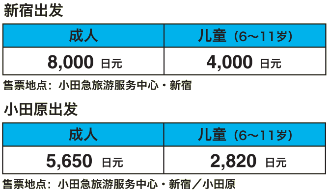
同样，如果想搭乘小田急浪漫特快，还是需要购买特急券。
同样可以参考小气少年的文章——箱根周遊券。富士箱根周游券可以理解为是箱根周游券的扩展，基本内容，用法都是一样的。
关于这两种周游券有以下两点需要注意：
关键点一： 如果选择从新宿出发的富士箱根周游券，那么3天内只能搭乘小田急线（新宿～小田原车站之间）一次，和中央高速巴士（新宿～河口湖或富士急乐园、富士山车站之间）一次；而从新宿出发的箱根周游券是搭乘小田急线往返新宿箱根各一次。如果购买从新宿出发的富士箱根周游券，那就意味着，从箱根入，从富士山出，或者相反。
关键点二： 从新宿出发的富士箱根周游券只能在新宿的小田急旅游服务中心购买，小田原的小田急旅游服务中心是不售卖的。
小田急浪漫特快 Odakyu Limited Express “Romancecar”
链接： 小田急浪漫特快
小田急浪漫特快是一种有点观光性质的列车。除“新宿～箱根汤本”的线路外，还有“新宿～御殿场”和“新宿～片濑江之岛”的线路。你可以通过网站、柜台/营业所、售票机来购买。我们不确定当天几点出关，几点能到达新宿，所以决定当场购买车票。如果你的时间很确定，推荐提前购买，因为下面的东东——展望席。
小田急浪漫特快共有四种车型，其中的VSE(50000型)、LSE(7000型)在车头和车尾的车厢中安排了展望席。很多日本人会很早预订。
当天我们没有赶上预订计划的那班带展望席的车，而下一班带展望席的车还要等很久，我们就没能亲身体验。我看过一些文章和视频，都推荐车头第一排的展望席。一些网文介绍说，车头前两排还可以，第三排就没什么意思了，你还不如坐一个离车头近的位置，走到展望席车厢去拍照。关于车尾展望席，我看过视频，一会就头晕了。展望席即使对日本本土的人也是很火的，所以车头第一排很难预订到。如果赶到周末或者日本长假，更是一票难求。所以想定的朋友要趁早。
小田急旅游服务中心 （Odakyu Sightseeing Service Center）
链接： 服务中心网址
新宿小田急旅游服务中心在JR新宿站西口的二楼，主要是针对外国人，有中文服务。很多网文都说这里经常人很多，会等很久。而我们到新宿小田急旅游服务中心的时候竟然发现没有人排队！估计因为3月是淡季，加上时间是下午4点左右的原因。如果你是旺季，或是周末来的话，推荐多留点时间来排队。小气少年推荐在旅游旺季，可以在新宿JR新宿站南口附近的小田急营业所购买。可是我不会日语，加上买的东西较多，所以就选择了这里。
我们未来四天的计划是第一天用下午半天时间赶到箱根入住酒店。第二天玩箱根，在箱根再住一晚。第三天早上赶到御殿场奥特莱斯，在那里逛一天，晚上赶到富士山的酒店。第四天白天玩富士山地区，晚上坐大巴回新宿。所以我决定购买富士箱根周游券（从小田原出发），浪漫特快车票（新宿～箱根汤本），加上高速巴士车票（河口湖站～新宿）。
接待我们的是一个中国小哥，人挺不错的。我们在这里把富士箱根周游券和浪漫特快车票给买了。小哥说我们可以把回新宿的高速巴士车票也买了，防止没有位子。我们只是在网上预订了一下，没有付钱。如果不付钱的话，可能会被别人付钱买走。我们就当场付钱，买了第四天7点多的，结果证明这个决定是绝对正确的！后面我将会讲到。
链接： 高速巴士网上预约
然后我们就很快的上了火车，其实从柜台走进扎口就是站台了。浪漫特急的车票是两张——乘车券和特急券。在进入检票口的时候，一定要两张叠在一起，投入检票机。
进入站台等不久车就来了。我们坐的是30000型EXE车。车厢两头没有专门存放行李的地方，只能将行李放到车厢最后一排的座位后面。幸好车上乘客不多，有足够的地方。车上有特色料理可以购买，感兴趣的朋友可以尝试一下 🙂 。
可能是因为还是初春，有点冷，一路上没有值得一提的风景，我们吃了一份便当，然后就小睡了一会。
小田原站 Odawara Station
在小田原站下车是临时起意的。快到小田原站的时候，太阳已经很低了。我一直都想去看看小田原城遗址——关东地区难攻不落之城，瞻仰下北条氏的英气，我又不想第二天再从酒店折回小田原，所以我们就提前下车了。
从小田原站到小田原城遗址距离并不是太远，只不过裹着海水咸味的冷风和重重的行李让这段步行显得十分的漫长。大概10分钟左右，就到了小田原城遗址公园的北入口。这里没有门，只有两个牌子，显示了不希望有人开车上去的企图。
经过一个长长的斜坡后，我们便来到了小田原城的天守阁的面前。这时，天色已经完全暗了下来。除了我们只有另外两三个人。我媳妇说，可以好好拍照了。
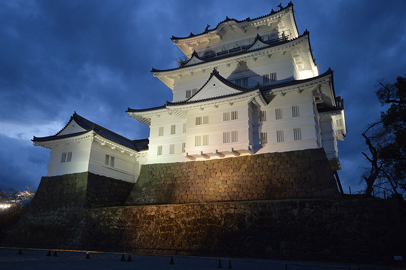
小田原城的天守阁是1960年重建的，但依然可以领略当初的风貌。当年的北条氏康就是凭借着这座城池击退了上杉谦信和武田信玄的军势。可是这里并不是很大，天守阁前的广场也只有小半个足球场的面积。面前的这片虽然只是整个小田原城的一小部分，可整体也没有给人一种过于壮观的印象。可是北条氏康能凭借此城连翻阻挡越后之龙和甲斐之虎称霸关东的野心，凭靠的或许不仅仅是这座城池，而更可能还有人心。正如武田信玄所说——人心即城垣！
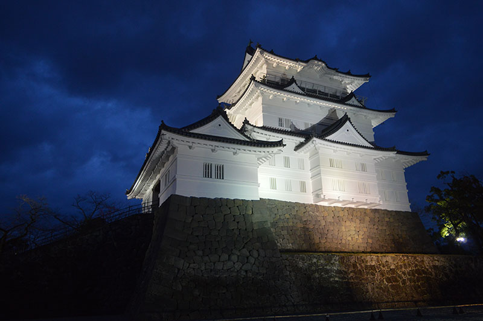
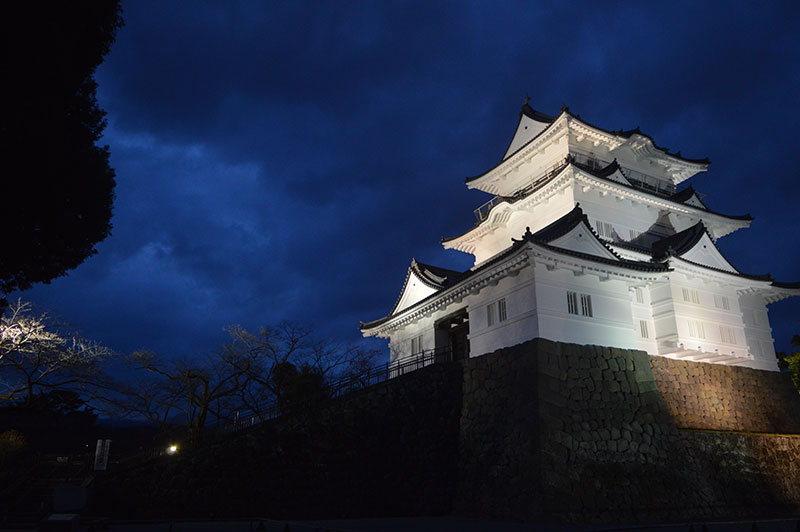
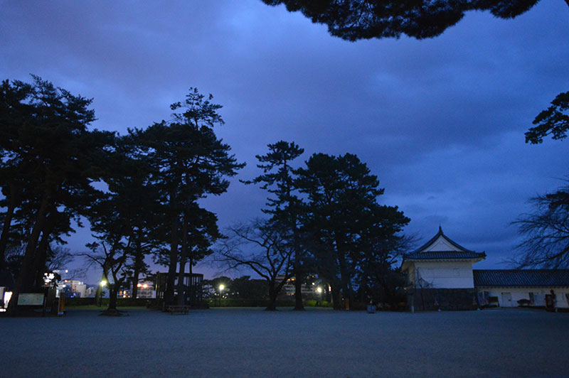
到酒店
欣赏完小田原城后，我们顶着冷风又走回小田原车站。本可以搭乘箱根登山巴士到酒店的，但我不想拖着箱子上上下下的去找巴士站，更怕没有放行李的地方，最后决定搭乘箱根登山电车了。从小田原站到达宫之下站（Miyanoshita Station/宮ノ下）需要在箱根汤本（Hakone-Yumoto Station/箱根湯本）换乘。行程就变成了小田原站～箱根汤本站～宫之下站～富士屋酒店。
上车后，车外已经完全黑了，附近没有住户，少有灯光，整个列车就像在一块黑色海绵里慢慢的爬着。实在无聊的紧。在箱根汤本到宫之下的途中停了几次车，司机下车从车头走到车尾。车发动后发现，车的前进方向变反了，车头变成了车尾。原来登山电车是这样登山的 🙂 。
从宫之下车站到酒店的路上，没有碰见什么行人，倒是路过的一家酒吧很是热闹。一路上没有没有看到其他餐厅开门，我们也懒得再找，就在路旁的罗森便利店买了晚餐。走了20分钟左右，我们就到了富士屋酒店的大厅。富士屋酒店（Fujiya Hotel /富士屋ホテル）是一家老牌的酒店。建于1891年，据说孙中山先生来箱根疗养的时候就是入住的这家酒店。蒋介石先生也曾经住过这里。经过数次扩充和改建，内部结构有点复杂，我有一次出门时竟然迷路了 😳 。房间内一看就是翻修过的老房子，天花板很高，设施很全。值得一提的是后院池子里养的一群锦鲤，其中还有几只金色的，很是漂亮。